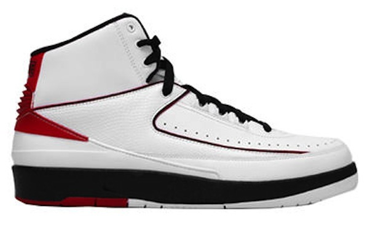
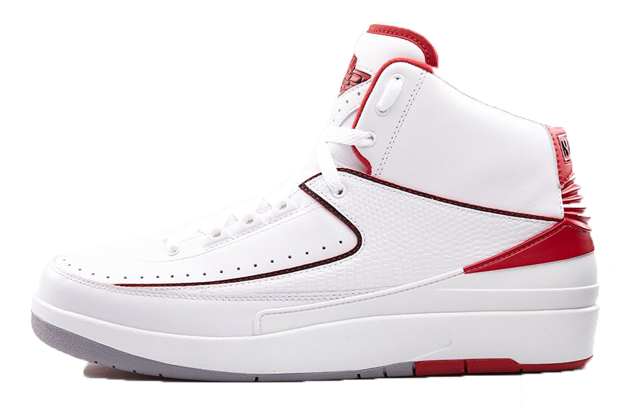

Design of Jordan II
Launched Date: April 15th, 1986
Retail Price:$136 USD

The Air Jordan 2 made its first debut in 1986. Designer of this model is Bruce Kilgore and Peter Moore, (both were dismissed from making any more AJ models after the II). Prior to the design of the Air Jordan 2, Jordan 2 was a revolution because it is the first basketball shoes the feature a soft midsole from heel to toe rather than a more °∞traditional for the time rubber cup sole.
設計理念
發售日期: 1986年4月15日
發售價格: 136美金（大陸，港臺地區價格各有不同

發售日期: 2008年10月31日
發售價格: 136美金（大陸，港臺地區價格各有不同.
了Air Jordan 2在1986年設計這個模型進行了首次亮相是布魯斯·基爾戈和彼得·摩爾（兩者都做任何更多的AJ模型大戰後解僱）。此前的Air Jordan 2的設計，喬丹二是一場革命，因為它是第一款籃球鞋的功能，從腳跟到腳趾，而不是一個更traditional的時間皮碗鞋底柔軟的底。
Story of Jordan II
- White-Black-Varsity-Red
- UNC 2
White-Black-Varsity-Red
The first Chicago Bulls's home color combination of Jordan basketball shoes
第一雙芝加哥公牛的第一個主場配色喬丹球鞋
UNC 2
The second shoes for Micheal Jordan's University - University of North Caroline
第二雙邁克爾喬丹的大學籃球學 － 北卡洛蘭大學